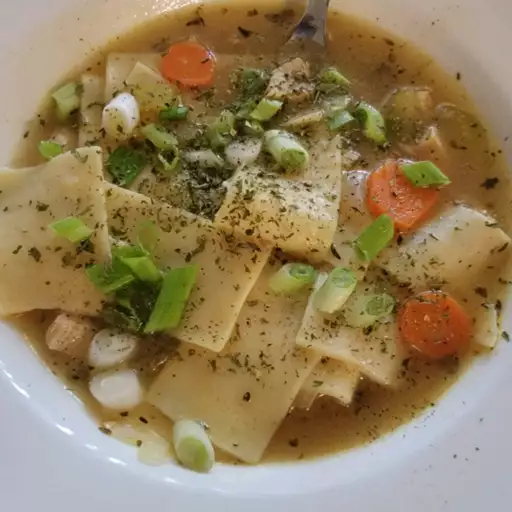
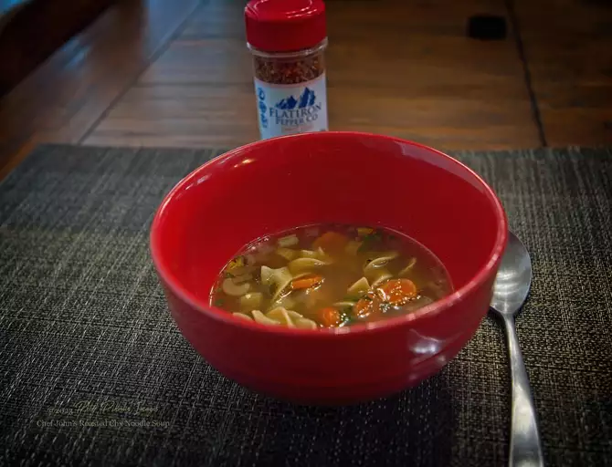
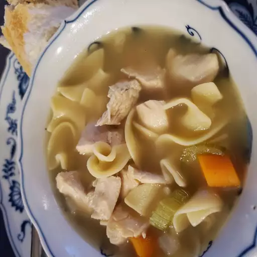

Homemade Chicken Noodle Soup
This homemade chicken noodle soup is soul-warming and deliciously simple — just chicken and noodles. What makes it so good is the homemade roasted chicken stock.
Recipe by John MitzewichUpdated on March 2, 2023
- 
- 
- 
-
Prep Time:
20 mins -
Cook Time:
20 mins -
total Time:
40 mins -
Servings:
8
:max_bytes(150000):strip_icc():format(webp)/220416-chef-johns-hamemade-chicken-noodle-soup-mfs-step-1-e8c2ffadbb1941048dfe0cf8e5d915f3.jpg)
:max_bytes(150000):strip_icc():format(webp)/220416-chef-johns-hamemade-chicken-noodle-soup-mfs-step-2-f1f64fbc991544188440db790eac8f38.jpg)
:max_bytes(150000):strip_icc():format(webp)/220416-chef-johns-hamemade-chicken-noodle-soup-mfs-step-3-0a19e60d7de042a192cf936c1c386dd2.jpg)
:max_bytes(150000):strip_icc():format(webp)/220416-chef-johns-homemade-chicken-noodle-soup-DDMFS-4x3-8afe771a58604367a7357af555399332.jpg)